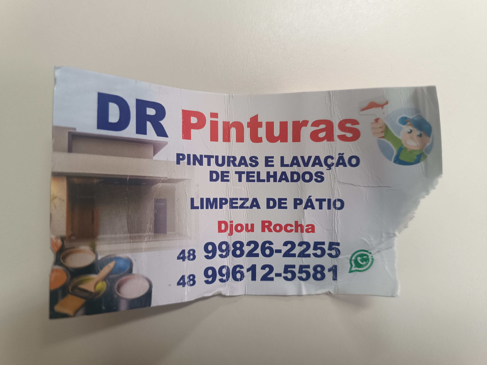

[2026] O Estranho Caso do Dr. Pinturas

Na região sul do brasil vem sendo criado a história de um homem, um doutor, que utiliza de sangue de jovens, mulheres e crianças como receita de suas tintas.
O Estranho Caso do Dr. Pinturas, como foi chamado, é nada mais nada menos que uma lenda urbana, na verdade a loja vem sido investigada e descobriram compostos seminais e fecais nas tintas.
~ SAIBA MAIS ~
[2026] Inauguração da Central InterNerd™
É com grande orgulho (e muito amadorismo) que a Nerd League United coloca no ar o seu QG Principal na web! A partir de agora, todas as nossas produções, coleções e segredos industriais estão centralizados em um só lugar.
Nossos desenvolvedores trabalharam virando noites à base de café barato para entregar um layout puramente nostálgico. Fique atento a esta aba para anúncios de novos episódios e comunicados urgentes.
Bastidores: O Mistério do Console de Review própria
No terceiro episódio da liga (*Super Contra*), Samuel deixou no ar o mistério sobre qual plataforma bizarra rodava o jogo. Os arquivos da **TGGA** confirmam os boatos de que o hardware receberá uma análise solo muito em breve.
Fontes anônimas indicam que hitboxes estão sendo refeitas no laboratório da liga enquanto o computador corporativo Dell Vostro tenta sobreviver a novos testes de vírus virtuais.